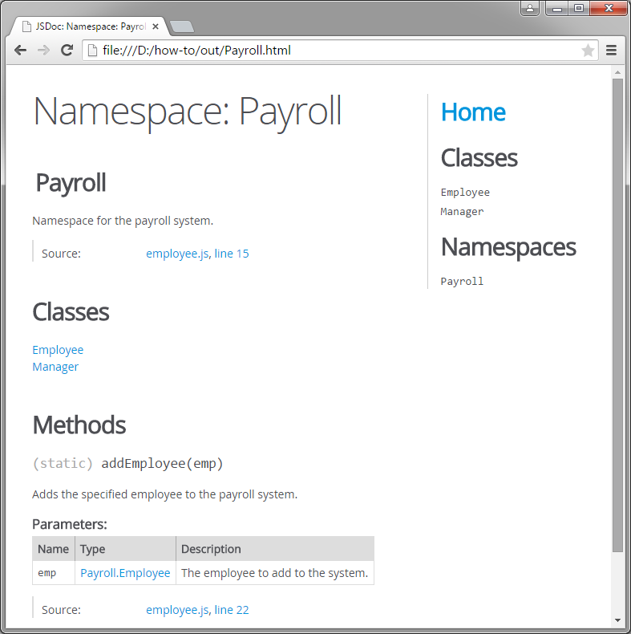

In JavaScript, it is considered good practice to use namespaces instead of global objects due to the potential for naming conflicts. A namespace in JavaScript is simply a global variable that contains all of the classes, functions, and other symbols used by that program. You can document a namespace in JSDoc using the @namespace block tag.
if (typeof Payroll == "undefined") {
/**
* Namespace for the payroll system.
* @namespace
*/
var Payroll = {};
}To add the existing classes and functions to the new namespace, you must either move the definitions inside the Payroll object, or add the Payroll namespace to the beginning of all objects. Note that functions must be declared as anonymous functions assigned to function objects to use the latter technique. For example, if we want to move the Employee class to the Payroll namespace using the second technique, we must rewrite the constructor function as follows.
Payroll.Employee = function() {};When you update the JavaScript code with the namespace, you must also update the type names in the comment blocks. Any type that is defined within the namespace must be prepended with the namespace when referring to it in the comment block. For example, the previously global addEmployee method now takes an argument of a Payroll.Employee object instead of an Employee object.
/**
* Adds the specified employee to the payroll system.
* @param {Employee} emp - The employee to add to the system.
*/
addEmployee = function(emp) {};/**
* Adds the specified employee to the payroll system.
* @param {Payroll.Employee} emp - The employee to add to the system.
*/
Payroll.addEmployee = function(emp) {};The Global section in the right-hand menu has now been replaced with the Namespaces section. The namespace reference shows a description of the namespace and lists all classes, methods, and types defined in the namespace.

You should now know enough JSDoc to start producing consistent and well-formed documentation for your JavaScript files, functions, and classes. Many more tags and features are available in JSDoc. You can read through the descriptions of what each tag does on the @use JSDoc website. Happy coding!